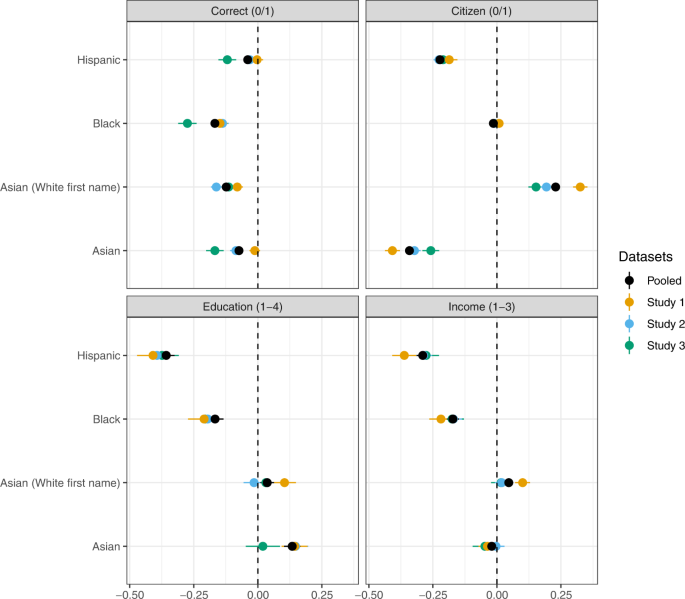

Publications
While the lab started recently, it has built on earlier work that the PI has done measuring class perceptions, which are a necessary foundation to studying class-based discrimination. Those publications are listed below. The lab aims to publish work in top social science journals across four major areas:
- Measuring and addressing class-based discrimination (i.e. povertyism)
- Improving how we measure public opinion of the poor and uneducated
- Understanding the attitudes and behaviors of homeless people
- Addressing #firstgen issues and representation in the academy
* = student author when the project started; five-year impact factors listed for journals outside political science
1. Measuring and addressing class-based discrimination (i.e. povertyism)
Charles Crabtree, Jae Yeon Kim, S. Michael Gaddis, John B. Holbein, Cameron Guage*, and William M. Marx*. 2023. "Validated Names for Experimental Studies on Race and Ethnicity." Nature Scientific Data, 10 (130). (IF: 8.501)
Charles Crabtree, S. Michael Gaddis, John B. Holbein, and Edvard Nergård Larsen. 2022. "Racially Distinctive Names Signal Race and Class." Sociological Science. (IF: 4.58)
DOI: 10.15195/V9.A18
